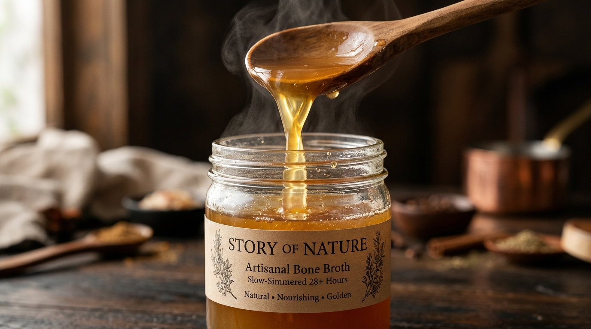

01 / GÜNE BAŞLARKEN
Bir fincanla yavaşla.
Kemik suyunu nazikçe ısıt. Dilersen birkaç damla limon ekle, kendi anının tadını çıkar.
TOPRAKTAN SOFRAYA · STORY OF NATURE
Biraz doğa, biraz sabır.
28 saat kısık ateşte demlenen ilikli kemik suları ve günlük hayatına eşlik eden botanik harmanlar.

Yavaş demlenir.DOĞADAN SEÇTİKLERİMİZ
Tanıdık malzemeler. Düşünülmüş tarifler.
Kendi ritüelini bul.
İçeriğini bil. Keyifle hazırla. Kendine bir an ayır.
 AZ MALZEME.
AZ MALZEME.BİR KAVANOZDAN DAHA FAZLASI
Bazı lezzetlerin sırrı daha fazlasını eklemek değil, doğru malzemelere zaman tanımaktır. Story of Nature, geleneksel mutfak kültürünü günlük hayatın küçük ritüelleriyle buluşturur.
Malzemeyle başlar.
İlikli kemikler, sebzeler ve aromatik bitkiler.
Sabırla demlenir.
28 saat boyunca kısık ateşte.
Sofranda tamamlanır.
Bir fincanda, bir çorbada, senin tarifinde.
AYNI KAVANOZ, İKİ FARKLI HAL
Kemik suyunun sıcaklıkla değişen dokusunu keşfet. Görseller sunum örneğidir; kıvam ürüne ve saklama koşullarına göre değişebilir.
Buzdolabında dinlendirilmiş, jel kıvamında doku.

MUTFAK NOTLARI
01 / GÜNE BAŞLARKEN
Kemik suyunu nazikçe ısıt. Dilersen birkaç damla limon ekle, kendi anının tadını çıkar.

02 / SOFRADA
Çorbana, pilavına ya da sebze yemeğine ekleyerek tanıdık lezzetlere yeni bir derinlik kat.

03 / GÜNÜ KAPATIRKEN
Bir fincan botanik harman demle. Ekranı bir kenara bırak, kendine sakin bir mola ver.
Kemik sularını açılmadan serin ve kuru yerde, açıldıktan sonra buzdolabında sakla. Pure Essence için belirtilen tüketim süresi açıldıktan sonra 4 gündür. Her zaman ürün etiketindeki talimatları esas al.
Ürünlerini sepete ekle. Sepetindeki WhatsApp butonu ürün ve adetlerini mesaj olarak hazırlar; sipariş, teslimat ve ödeme ayrıntılarını ekiple netleştirebilirsin.
Kemik suyunu ısıtarak fincanda tüketebilir veya yemeklere ekleyebilirsin. Bitki harmanını ürünün demleme talimatına göre hazırla. İçerikleri ürün detaylarında inceleyebilirsin.
750 TL ve üzeri ürün toplamında ücretsiz kargo eşiğine ulaşırsın. Daha düşük tutarlarda kargo bedeli ve teslimat koşulları sipariş teyidinde paylaşılır.
KENDİ HİKÂYENE BİR YER AÇ.